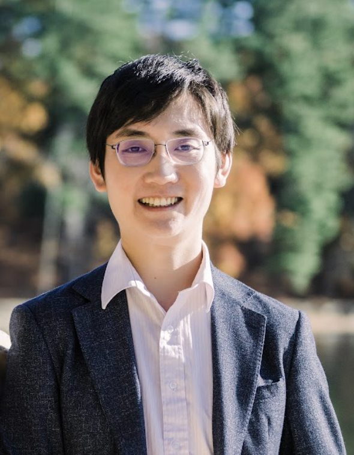
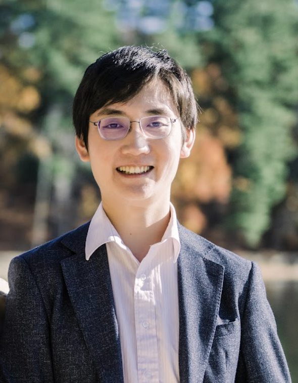
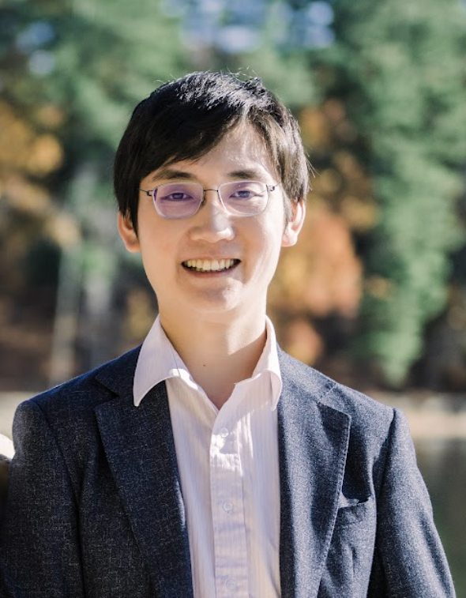

Lewis Wang
Email: xxx.email@example.com

Email: xxx.email@example.com
Hi! I’m a philosopher who primarily does Ethics, Metaethics, and Epistemology.
Since Fall 2o22, I’ve been an Assistant Professor in the Philosophy department at Harvard. During AY 2023-24 I’ll be a Fellow-in-Residence at the Edmond and Lily Safra Center for Ethics.
Before Harvard, I was an Assistant Professor at USC (2020-2022). Before USC, I was a Bersoff Fellow at NYU (2018-2020).
Before NYU, I got my PhD in Philosophy at the University of Michigan, Ann Arbor (2013-2018). My dissertation was on moral motivation. Here it is.
Before Michigan, I did the Teach First programme (2011-2013), earning a PGCE — the UK’s main teaching degree — and teaching full-time for two years in a secondary school in Croydon.
Before Teach First, I did a BA and M.Phil in Philosophy at the University of Cambridge (2007-2011). I was at Fitzwilliam College.
Before Cambridge, I was born in London (1988-1989) and grew up in Nottingham (1989-2007). Sometimes I give talks in a Midlands accent, because representation is important.
Hi! I’m a philosopher who primarily does Ethics, Metaethics, and Epistemology.
Since Fall 2o22, I’ve been an Assistant Professor in the Philosophy department at Harvard. During AY 2023-24 I’ll be a Fellow-in-Residence at the Edmond and Lily Safra Center for Ethics.
Before Harvard, I was an Assistant Professor at USC (2020-2022). Before USC, I was a Bersoff Fellow at NYU (2018-2020).
Before NYU, I got my PhD in Philosophy at the University of Michigan, Ann Arbor (2013-2018). My dissertation was on moral motivation. Here it is.
Before Michigan, I did the Teach First programme (2011-2013), earning a PGCE — the UK’s main teaching degree — and teaching full-time for two years in a secondary school in Croydon.
Before Teach First, I did a BA and M.Phil in Philosophy at the University of Cambridge (2007-2011). I was at Fitzwilliam College.